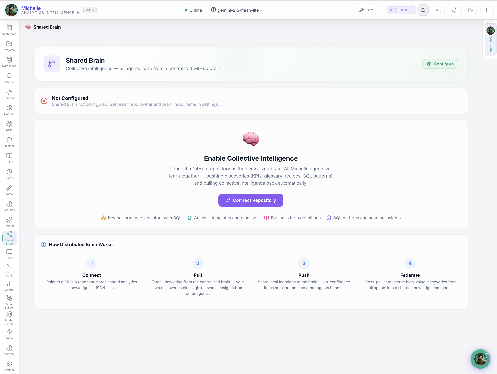
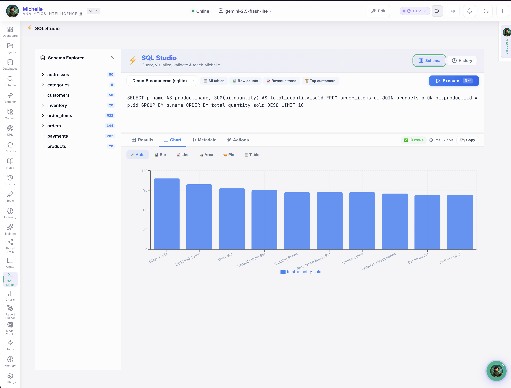

See How Teams Save 25 Hours Per Week ¶
Two AI copilots. Two types of manual work eliminated. See exactly what changes for your Monday mornings and your data team's backlog — with screenshots from production use.
The Cost of Manual Work¶
Every week, teams lose 25+ hours to fragmented tooling and repetitive data plumbing:
| Role | Activity | Time Lost | Annual Cost (€85/hr) |
|---|---|---|---|
| PMs | Gathering status from GitHub, Jira, Slack | ~3 hrs/week | €13,260 |
| PMs | Preparing standup + sprint meetings | ~2 hrs/week | €8,840 |
| PMs | Writing reports and executive summaries | ~2 hrs/week | €8,840 |
| PMs | Identifying risks and blockers reactively | ~2 hrs/week | €8,840 |
| Analysts | Writing ad-hoc SQL for business users | ~4 hrs/week | €17,680 |
| Analysts | Re-explaining metric definitions | ~2 hrs/week | €8,840 |
| Analysts | Building + refreshing dashboards | ~3 hrs/week | €13,260 |
| Analysts | Validating AI-generated data answers | ~2 hrs/week | €8,840 |
| Total | ~20-25 hrs/week | €88,400–€110,500/year |
This is the work we eliminate.
🎩 Project Reporting — Before & After¶
Before: Monday Morning Chaos¶
The Status Quo
Open Jira → Slack → GitHub → Spreadsheet. 45 minutes of context-switching. Data already stale. Risks invisible until the meeting. Friday report takes 3 hours.
After: One Screen. 10 Seconds. Done.¶

What Jean-Pierre automates:
A continuously-updated health score tells you instantly if your project is on track, at risk, or needs attention. No more guessing. No more "let me check."
Jean-Pierre detects problems 2-3 weeks before they surface in meetings: stale PRs, sprint velocity drops, missing reviewers, overloaded contributors. Click any alert → get an AI-powered action plan.
CTO version, CFO version, PMO version — generated in seconds from live GitHub + Jira data. The Friday report panic is over.
Managing 10+ projects? Fleet View ranks all projects by risk score on a single screen. Open it at 9am → know in 10 seconds where attention is needed.
Impact
Morning check-in: 45 minutes → 30 seconds. Weekly reporting: 3 hours → 1 click. Risk detection: reactive → proactive.
An AI That Knows Your Projects¶
Jean-Pierre isn't a generic chatbot. It's connected to your live data, remembers your preferences, and understands your team structure.

Ask anything:
"Generate a standup report for all projects"
→ Jean-Pierre fetches PRs, commits, sprint data → synthesizes a structured report with risks and action items. ⏱️ 8 seconds.
"Which PRs have been open too long and who should review them?"
→ Analyzes PR age, checks contributor history, suggests optimal reviewer per PR. ⏱️ 5 seconds.
"What should I focus on today?"
→ Checks sprint deadlines, scans for urgent items, reviews yesterday's activity → returns a prioritized action list. ⏱️ 6 seconds.
Portfolio Overview: All Projects at a Glance¶

- Live project cards with health badges, commit sparklines, and key metrics
- Smart connections between projects (dependencies, blockers, team sharing)
- AI analysis that spots cross-project risks invisible in individual views
Impact
Portfolio review: 2-hour spreadsheet → 5-minute visual check. AI spots risks you wouldn't find until the next steering committee.
Multi-Project Fleet View¶

Managing 5, 10, 20 projects? Fleet View ranks them all by risk score. Highest risk first. One screen. 10 seconds.
Memory That Evolves¶
Tell Jean-Pierre something once — he remembers it forever:
- "We use 2-week sprints starting Monday"
- "Alice is on vacation until the 20th"
- "I prefer tables over bullet points"
No configuration files. No setup. He learns from conversations and applies this knowledge automatically.
Explore all Jean-Pierre features →
🔬 Analytics — Before & After¶
Before: The Data Team Bottleneck¶
The Status Quo
Every PM, marketer, and exec fires off "quick" requests. 15 requests/week × 30-60 min each = 1-2 analysts doing glorified lookups. Best analyst leaves → knowledge gone.
After: Self-Service in 3 Seconds¶

Ask Data Questions in Plain English¶
No SQL required. Michelle connects to your databases and lets anyone ask:

"What were our top 10 products by revenue last quarter?"
→ Michelle writes the SQL, executes it, returns a formatted table with totals. ⏱️ 3 seconds.
"Which customers haven't purchased in 90 days?"
→ Queries customer and order tables, identifies at-risk accounts, suggests follow-up actions. ⏱️ 4 seconds.
Every answer includes the exact SQL used and the source tables — so you can verify and trust the results.
Impact
Ad-hoc requests: 30-60 minutes each → 3 seconds. Business users self-serve. Analysts focus on strategy, not lookups.
Zero Hallucinations — Provably¶

Most AI analytics tools make up numbers. Michelle does the opposite:
- ✅ Execution receipts on every query — proof it ran against real data
- ✅ Source citations — which tables, which columns, which joins
- ✅ Test Harness — define expected answers, run validation suites, measure accuracy
- ❌ Can't verify it? → Flagged as UNVERIFIED. Not hidden. Not guessed.
Impact
Data quality: "trust the chatbot" → "verified against known answers." Build confidence before rolling out to business users.
Knowledge That Survives Turnover¶

When one analyst teaches Michelle a metric definition, everyone benefits:
- Metric definitions — "Revenue = sum of order totals excluding returns"
- Business rules — "Active customer = purchased within 90 days"
- Domain glossary — Company-specific terminology, consistently applied
- Verified SQL examples — Approved question→SQL pairs
Your best analyst's knowledge, versioned and shared. It survives vacations, promotions, and resignations.
Self-Healing Memory¶

Correct Michelle once — she never makes the same mistake again. The evolution engine tracks every correction and applies it automatically. She measurably improves every week.
Full Data Platform¶


Complete data workspace: Schema Browser for visual database exploration, SQL Studio for power users, Rules Editor for business logic, and Recipes for automated analysis pipelines.
Explore all Michelle features →
Enterprise-Grade Privacy¶
100% On Your Machine¶
No SaaS. No cloud. The binary runs on your laptop or server. Period.
Your Data Never Leaves¶
All storage is local SQLite. Nothing is ever sent to external services.
Your Keys, Your Control¶
Direct API calls to GitHub/Jira/databases from your machine. No proxy.
Air-Gap Ready¶
Use with Ollama (free, local AI) for fully offline operation. Zero internet.
Works With Your Stack¶
The Combined ROI¶
| Copilot | Metric | Before | After | Savings |
|---|---|---|---|---|
| 🎩 JP | Status gathering | 3 hrs/week | 0 (automated) | 3 hrs/week |
| 🎩 JP | Meeting prep + reports | 4 hrs/week | 5 min total | ~4 hrs/week |
| 🎩 JP | Risk identification | Reactive | Real-time alerts | Fewer crises |
| 🔬 Michelle | Ad-hoc data requests | 2-4 hrs each | 3 seconds | 95% faster |
| 🔬 Michelle | Knowledge retention | Lost when staff leave | Shared Brain | Permanent |
| Combined savings | ~25 hrs/week |
That's €110,000+ per year
At blended €85/hour: €110,500 in annual productivity gains — plus the value of faster decisions, eliminated risks, and knowledge that survives turnover.
Ready to See It Work for Your Team?¶
Founding Member Program
Pick one workflow. We automate it in 2-3 weeks. You measure real time saved.
No cost. Direct access. Shape the product.
📧 info@unicolab.ai · 💬 LinkedIn · Part of the AIFlow ecosystem